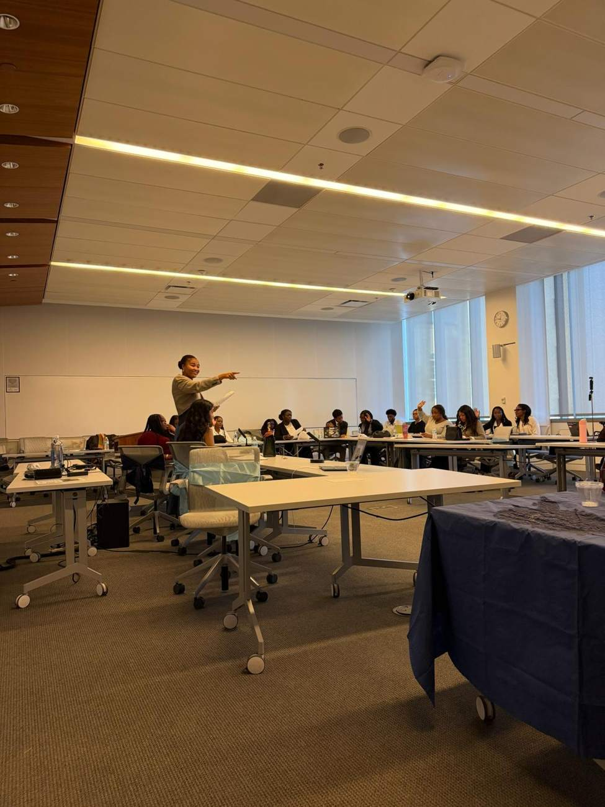

BRIDGE the District
BRIDGE the DistrictPartnership prospectus · The BRIDGE Line · Spring 2027
Come into the room.
Build it with us.
BRIDGE the District · Student-powered. Institutionally grounded. Built to last.
1 · Executive summary
Opportunity should not depend on who you already know.
BRIDGE the District connects students to the people, institutions, resources and experiences that make opportunity tangible. Through college-student leadership, community partnerships and intentional professional exposure, we are building a more connected educational ecosystem across Washington, DC.
At a glance
- Who we areA student-powered 501(c)(3) public charity in Washington, DC, founded in 2025. EIN 39-3160840.
- MissionBRIDGE the District closes opportunity gaps by supporting youth to excel within and beyond the classroom.
- ModelCollege students train as Impact Scholars, then design and lead programs and bring younger students along.
- 2027 season10 planned programs, January to April. Season goal: $10,000.
2 · The problem
DC is full of open doors. Not every student gets to walk through them.
- 55%of DC's public high school class of 2024 enrolled in college or another postsecondary program within six months of graduating, down a point from the year before.DC Policy Center, State of D.C. Schools 2024–25
- 80%+of jobs in the District of Columbia are projected to require education or training beyond high school by 2031, the highest share in the country.Georgetown University Center on Education and the Workforce, After Everything (2023)
- 22% vs 57%Who took AP courses in DC, 2021–22: Black students 22%, White students 57%.DC Racial Equity, Academic Achievement Gap brief, citing the Community College Research Center
We are not simply bringing students into rooms. We are changing who gets access to those rooms in the first place.
3 · Our distinctive model
One investment. Two lines of opportunity.
- ResourcesInstitutions bring what students cannot easily reach alone: rooms, expertise, funding and introductions.
- ProgrammingCareer programs, community nights, school visits and Impact Scholar training, run on one season calendar across three tracks.
- Impact ScholarsThe transfer station. College students train as Impact Scholars, then design, host and lead each program. Every investment passes through them.
- College studentsCollege students gain leadership experience, professional exposure, mentors and access to professional networks.
- Younger studentsYounger students gain college exposure, near-peer mentors, enrichment and access to resources.
- OutcomesStronger educational pathways, wider networks, more access to institutions and a more connected city.
Solid stations describe established activity. The dashed terminal is an intended long-term outcome, not a claimed result.
4 · Documented accomplishments
Fall 2026 programs: Many organizations, one room (American University); LINKED (Banned Books Week); Read the Room (True Reformer Building); BRIDGE to Policy & Law (AU Washington College of Law); College immersion day (American University, with Parkmont School); BRIDGE to Health (AAMC); Community asset mapping (Annunciation Catholic School). We have not yet published outcome figures. Standard surveys and follow-up begin with the spring 2027 season, and results will appear here once collected and reviewed.



5 · Built to last
Student-powered. Institutionally grounded.
Standing and governance
Incorporated in the District of Columbia as a nonprofit corporation on July 9, 2025. Recognized as a 501(c)(3) public charity: Recognized by the IRS in September 2025, effective July 9, 2025. Gifts are tax-deductible as allowed by law. EIN 39-3160840.
BRIDGE is governed by bylaws adopted at incorporation, which provide for a volunteer Board of Directors of three to fifteen members. Board seats have not yet been filled. Day to day, the Executive Director leads a student leadership team.
Three tracks
- BRIDGE to OpportunityBrings college exposure and near-peer mentoring to younger students in DC schools. 16 planned spring seats.
- BRIDGE to CommunityBuilds belonging and cross-campus connection, and brings BRIDGE into public life in DC. 14 planned spring seats.
- BRIDGE to LeadershipRuns the institutional side: career programs, fundraising, content and the systems that let BRIDGE grow. 10 planned spring seats.
Built for continuity
- Returning Track LeadsReturning Impact Scholars help lead the three tracks, so experience carries from one cohort to the next.
- A written libraryThe BRIDGE Library holds step-by-step guides, such as planning a program and hosting a school visit on campus, so no program depends on one person remembering how.
- A record of every programPrograms are documented with sign-ins and event records, filed in shared drives by term.
- A decision logLeadership decisions are written down with the date and the reason, so new leaders can see why things are the way they are.
- Structured selectionApplications are reviewed and applicants are interviewed against shared criteria.
- Shared inboxesPartners write to role inboxes, not personal accounts, so conversations survive leadership changes.
- Role cards and named backups (being built)Leadership roles are being written up as role cards, with backups.
- End-of-term handoff (being built)Terms close with a written handoff and an archive.
- A Board of Directors (being built)Our bylaws provide for a volunteer Board.
How we measure
In place now: Sign-in at every program, kept by the Impact Scholar running it; A written record of each program; Application review and interviews for the fellowship; Public campaign records for every fundraising campaign; Feedback forms and pre and post surveys at selected programs.
Starting spring 2027: Participant records that link attendance across programs, so we can report unique people; A short survey after programs; A self-assessment for Impact Scholars; Follow-up on mentoring connections made at programs; Feedback from partner schools; Impact updates for partners. These are measures we are building toward. They show our direction, not results, and they may change as we learn what works.
6 · Spring 2027 programming
The BRIDGE Line: 10 programs, January to April.
| Date | Program | Who it serves | Partnership makes possible |
|---|---|---|---|
| Jan 9 | Winter FundraiserCommunity · Planned | BRIDGE supporters, families, alumni and friends. | Event costs, so more of what is raised can go to programs. |
| Jan 16 | Fellow RetreatScholar leadership · Planned | The spring cohort of Impact Scholars. | Training space, materials and welcome kits for incoming scholars. |
| Jan 30 | BRIDGE to MedicineCareer exploration · Planned | Pre-health college students from Howard, American and beyond. | Food, materials and space for students to meet professionals in a relaxed setting. |
| Feb 6 | Hall Pass HubCommunity · Planned | College students across DC campuses. | Food, games and prizes for the night. |
| Feb 15–20 | Black History WeekCivic engagement · Planned | Students at Howard, American and George Washington universities. | Speakers, performers, venues and materials. |
| Feb 20 | BRIDGE to Policy & LawCareer exploration · Planned | College students interested in law, policy and public service. | Lunch, workshop materials and space for students to work with practitioners. |
| Mar 14 | Hall Pass HubCommunity · Planned | College students across DC campuses. | Food, giveaways and prizes for the night. |
| Mar 20 | BRIDGE to Media & EntertainmentCareer exploration · Planned | Students interested in journalism, media, entertainment and communications. | Speakers, a venue and materials. |
| Apr 9 | Next Up TourYounger students · Planned | Younger students from DC schools, led by Impact Scholars. | Transportation and lunch for the tour group. |
| Apr 24 | Closing DinnerScholar leadership · Planned | Impact Scholars, partners and supporters. | The dinner, recognition for scholars and the season recap. |
Dates are planned. Speakers, venues and partners are listed only once confirmed.
7 · Partnership opportunities
Invest in the system, not just the event.
Three tracks: fund one program, the spring season, or the institution. Each package is chosen on purpose. Unrestricted gifts are welcome at any amount.
Proposed partnership packages
| $250 | Station SupporterTrack A: Back one program on the line. | Program recap |
| $500 | Station PartnerTrack A: Back one program and put your name on one moment of it. | Program recap Invitation to attend Named moment (limited) |
| Set together | Program Presenting PartnerTrack A: Present one program. Amount and scope set together. | Program recap Invitation to attend Presenting one program (limited) Planning conversation |
| $1,000 | Line PartnerTrack B: Support the spring 2027 season as a whole. | Named at each spring program Season report |
| $2,500 | Founding RiderTrack B: An inaugural partner of the 2027 BRIDGE Line. Chosen explicitly, for 2027 only. | Named at each spring program Season report Propose speakers or mentors, subject to review 2027 Founding Rider archive listing |
| $5,000 | Season Presenting PartnerTrack B: Present the spring 2027 season. | Named at each spring program Season report Propose speakers or mentors, subject to review Season presenting (limited) Planning conversation |
| $10,000+ | Institutional Impact PartnerTrack C: Fund the infrastructure behind every program, for a year or more. | Planning conversation Written agreement Leadership check-ins Season report |
| Any | Unrestricted giftNo title | Any amount, used where the season needs it most. It carries no partnership title and no recognition beyond a written acknowledgment, and it can be given online. |
All levels and benefits are proposed for the 2027 season and require confirmation. Titles come only from the package you choose, never from your total. Limited benefits, such as named moments and presenting acknowledgment, are confirmed in writing before they are promised.
Other ways to partner: Unrestricted operating support · Program-specific support · Recurring giving · Employee volunteer engagement · Professional mentorship · Customized institutional partnership · In-kind support.
8 · How partnership works
Clear terms, before anything is promised.
How packages combine
- TitlesA title comes only from the package you choose. Totals never become titles: five $500 program sponsorships are five program sponsorships.
- StackingProgram benefits are delivered per program. Season and partnership benefits are delivered once.
- Limited benefitsNamed moments and presenting acknowledgment are limited and confirmed in writing.
- PaymentUnrestricted gifts can be given online. Designated support is confirmed first so the designation is recorded.
Founding Rider
- Founding Rider exists for the inaugural 2027 season only and is not offered in later years.
- It is granted only when chosen explicitly and approved by BRIDGE, never because a total reaches $2,500.
- The archive listing is permanent. Active recognition and benefits end with the spring 2027 season.
- Renewal in later years is a new partnership at whatever levels exist then.
Program independence
- Partnership does not include access to student names, contact details or rosters.
- Students choose whether to stay in touch with a professional they meet.
- Partnership does not include a hiring pipeline or guaranteed introductions to candidates.
- Photos of younger students are never used in partner recognition or marketing.
- Recognition is an acknowledgment of support. It does not mean BRIDGE endorses a product, and partners do not control program content.
- We may decline support that does not fit our mission or would put students in an awkward position.
If a program changes
If a program you support changes or is canceled, we will contact you to talk through the options. We do not redirect a designated gift without talking with you first.
From interest to partnership
Exploring → Proposed selections → Inquiry sent → Initial review → Conversation → Written proposal → Availability confirmed → Agreement approved → Payment or commitment → Partnership active → Benefits delivered → Impact report → Renewal
9 · Industry-specific engagement
Find the line your industry already runs on.
LPLaw and Public PolicyRunning now
Legal career exploration, civic education, public service, mentorship and access to the policy workforce.
Propose a speaker or workshop for BRIDGE to Policy & Law · Bring a mock hearing or case study to students · Open your office or chamber for a visitHCHealthcareRunning now
Healthcare career exposure, professional mentorship, educational pathways and workforce development.
A clinician or researcher at a mentor table · Case-based stations like the ones at BRIDGE to Health · Shadowing or a site visitTXTechnologyProposed
Digital equity, AI literacy, technology career exploration and responsible innovation.
Co-design a BRIDGE to Technology program · An AI literacy workshop led with Impact Scholars · A site visit to your teamFSFinancial ServicesProposed
Financial literacy, economic mobility, professional development and career access.
A financial literacy workshop for college or younger students · Career conversations with your analysts and advisors · Sponsorship of a program aligned with economic mobilityMCMedia and CommunicationsRunning now
Media literacy, storytelling, journalism and communications career exposure.
Propose a speaker for BRIDGE to Media & Entertainment · A studio or newsroom tour · A storytelling or media literacy workshopCPConsulting and Professional ServicesProposed
Leadership development, problem-solving, professional readiness and mentorship.
A case challenge for Impact Scholars · Pro bono support for BRIDGE operations · Mentorship for scholar leadersEPEducation and PhilanthropyRunning now
College access, educational equity, student success, school-university partnerships and sustainable community engagement.
Support for the Next Up Tour and school visits · Unrestricted or program support · Co-design a school and university initiative10 · Contact and next steps
Let's build it together.
- Choose a program, a level, or unrestricted support.
- Set a planning conversation with our team.
- Introduce us to a colleague who should be in the room.